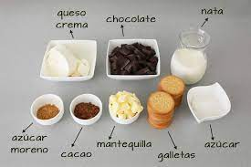
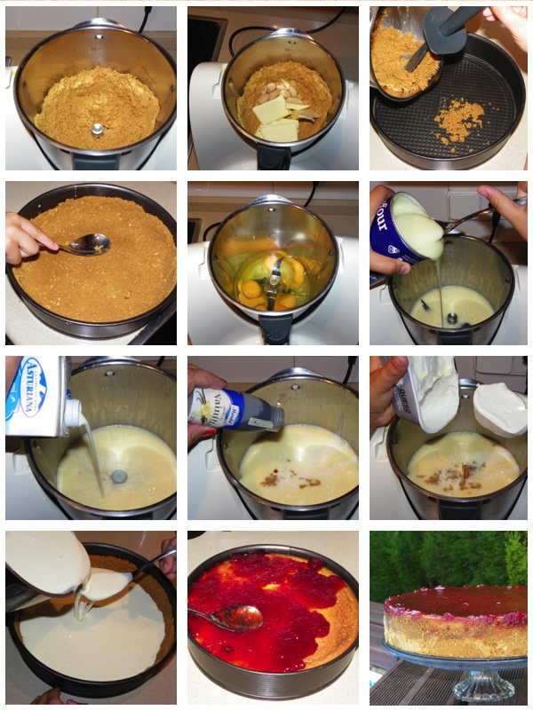

Ingredientes
- Galletitas dulces 150 g.
- Manteca 80 g.
- Port salut untable clásico 200 g.
- Crema de leche 350 cc.
- Azúcar 250 g.
- Ralladura de limón ½ unidad
- Esencia de Vainilla ALICANTE ½ cdita.
- Gelatina sin sabor 14 g.
- Agua 70 cc.
- Mermelada de Frutos Rojos 150 g.
- Hojas de menta 10 unidades

Paso a paso
- Procesá las galletitas dulces junto con la manteca fría hasta obtener un granulado que será la base del cheesecake.
- En un molde (preferiblemente desmontable) colocá las galletitas trituradas, aplastalas bien para que se compacten y luego llevalas a la heladera para que se endurezcan.
- En un bol mezclá el queso con la crema fría y el azúcar. Añadí la ralladura de limón y la Esencia de Vainilla Alicante.
- Disolvé la gelatina en agua fría, llevala a hervor (también podés ponerla unos segundos en el microondas) y luego incorporala a la mezcla del queso y la crema. Integrá bien la gelatina para que luego se solidifique en forma pareja.
- Volcá la preparación sobre la base de galletitas y llevala nuevamente a la heladera hasta que solidifique, mínimo 3 horas, pasado ese tiempo ya podés desmoldarlo (lo ideal es hacerlo de un día para el otro).
- Por otro lado colocá la mermelada de frutos rojos con agua en una sartén, llevala a fuego medio y mezclá hasta lograr una salsa espesa. Dejala enfriar y disponela sobre la superficie del cheesecake. Llevá todo nuevamente a la heladera hasta el momento de serivr.
